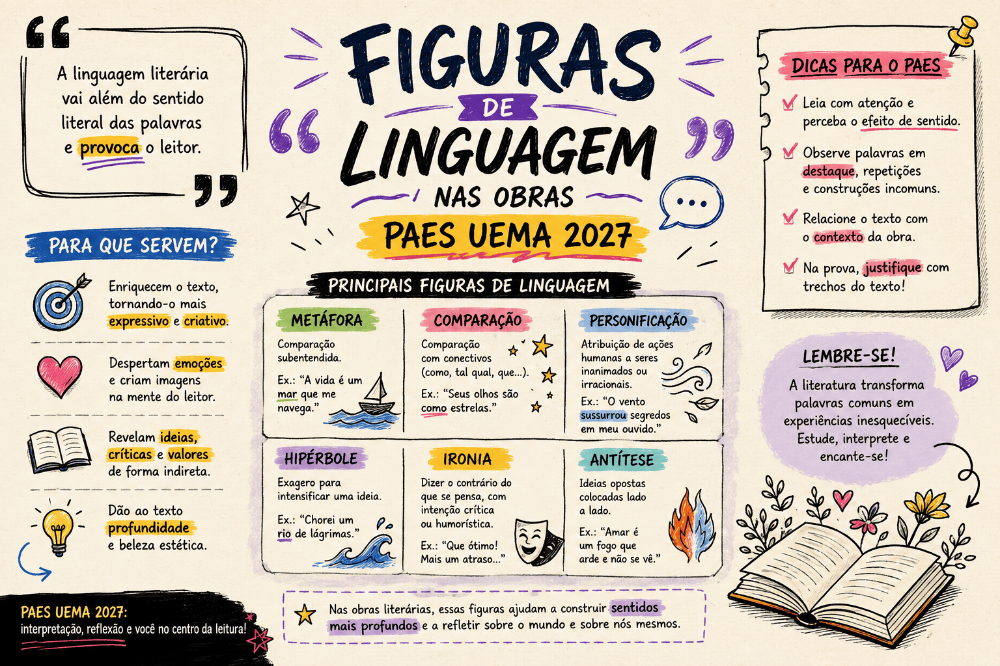

Figuras de Linguagem nas Obras do PAES UEMA 2027: Questões Comentadas
As Figuras de Linguagem representam um dos recursos mais expressivos da literatura, permitindo aos autores transcender o sentido literal (denotativo) das palavras para criar imagens, sons e emoções no campo conotativo. No PAES UEMA 2027, dominar esse assunto é fundamental para a prova de Linguagens, pois a banca exige que o candidato reconheça e interprete o efeito de sentido gerado por esses recursos.
Nesta página, faremos uma revisão estratégica das principais figuras de linguagem e, em seguida, você testará sua percepção literária com 15 questões inéditas elaboradas com fragmentos originais das três obras obrigatórias: Infância de Graciliano Ramos[cite: 1], Crônicas de Lucy Teixeira[cite: 2] e Meu Livro de Cordel de Cora Coralina[cite: 3].

As Principais Figuras de Linguagem no Vestibular
Para o vestibular da UEMA, você não precisa decorar todas as dezenas de figuras existentes, mas deve ter domínio absoluto sobre aquelas que mais aparecem na prosa e na poesia.
Figuras de Palavras (ou Semântica)
- Metáfora: É uma comparação implícita, sem o conectivo ("como", "parece"). Transfere o significado de uma palavra para outra com base em uma semelhança.
Exemplo em Cora Coralina: "O Padeiro é o ponteiro das horas..."[cite: 3]. - Comparação (Símile): Diferente da metáfora, apresenta os elementos comparativos de forma explícita (como, tal qual, feito).
Exemplo em Graciliano Ramos: "...azucrinaram-se como tanajuras, zonzas."[cite: 1]. - Metonímia: É a substituição de um termo por outro com o qual ele tem uma relação de proximidade lógica (o autor pela obra, a parte pelo todo, o continente pelo conteúdo).
Exemplo em Cora Coralina: "Mãos que varreram e cozinharam." (A parte 'mãos' substitui o ser humano inteiro)[cite: 3]. - Sinestesia: É a mistura de sensações percebidas por diferentes órgãos dos sentidos (visão, audição, paladar, olfato, tato).
Exemplo em Lucy Teixeira: "Solidão tem gosto de morte" (sentimento abstrato misturado ao paladar)[cite: 2].
Figuras de Pensamento
- Prosopopeia (Personificação): Atribuição de sentimentos, ações ou qualidades humanas a seres irracionais ou coisas inanimadas.
Exemplo em Graciliano Ramos: "O sol cresceu, bebeu as águas..."[cite: 1]. - Hipérbole: É o exagero intencional para realçar uma ideia.
Exemplo em Graciliano Ramos: "...O fim dele tocava o céu."[cite: 1].
Figuras de Som e Sintaxe
- Onomatopeia: Imitação de ruídos ou sons da natureza por meio de palavras.
Exemplo em Cora Coralina: "Tibum... a lata vem cheia d'água."[cite: 3].
Estratégia para o PAES UEMA
As bancas modernas não pedem apenas o nome da figura gramatical; elas cobram o efeito de sentido. Por exemplo, ao usar a personificação em "a chuva que acha de entrar em nosso quarto, mal educada"[cite: 2], a autora não apenas personifica o clima, mas estabelece um tom humorístico e intimista na narrativa. Analise sempre o contexto!
Questões sobre Figuras de Linguagem para o PAES UEMA 2027
15 questões inéditas baseadas nas obras obrigatórias
Questão 1 — Identificação Semântica (Contexto: Infância)
"Mergulhei numa comprida manhã de inverno."[cite: 1]
Ao utilizar o verbo "mergulhei" para se referir à sua imersão nas lembranças de uma manhã fria[cite: 1], Graciliano Ramos constrói uma figura de linguagem baseada em uma relação de semelhança implícita. Qual é essa figura?
Questão 2 — Figuras de Pensamento (Contexto: Infância)
"O sol cresceu, bebeu as águas, e ventos mornos espalharam na terra queimada uma poeira cinzenta."[cite: 1]
Para descrever o fenômeno da evaporação provocado pelo sol forte do sertão[cite: 1], o autor utiliza a seguinte figura de pensamento:
Questão 3 — Figuras de Palavras (Contexto: Infância)
"De ordinário pachorrentas, azucrinaram-se como tanajuras, zonzas."[cite: 1]
O narrador aproxima o comportamento atordoado das pessoas ao de um inseto através de um termo conectivo explícito[cite: 1]. Temos aqui o recurso de:
Questão 4 — Exagero Literário (Contexto: Infância)
"O pátio, que se desdobrava diante do copiar, era imenso, julgo que não me atreveria a percorrê-lo. O fim dele tocava o céu."[cite: 1]
Para transmitir a percepção assustada e diminuída da criança diante da amplitude da fazenda[cite: 1], Graciliano Ramos vale-se de uma:
Questão 5 — Efeito de Sentido (Contexto: Infância)
"Achava-me num deserto. A casa escura, triste; as pessoas tristes."[cite: 1]
Ao afirmar "Achava-me num deserto"[cite: 1], sendo que estava dentro de uma sala rodeado por algumas pessoas da fazenda, o narrador constrói uma:
Questão 6 — Mistura de Sensações (Contexto: Crônicas de Lucy Teixeira)
"Solidão tem gosto de morte"[cite: 2]
Na crônica Os Aniversários, a autora cruza um estado emocional abstrato com a percepção do paladar[cite: 2]. Essa figura poética é classificada como:
Questão 7 — Figuras de Pensamento (Contexto: Crônicas de Lucy Teixeira)
"A palavra brinca conosco, esquiva-se como a bailarina..."[cite: 2]
Na primeira oração do período ("A palavra brinca conosco")[cite: 2], a escritora dá vida autônoma e vontades próprias ao vocábulo. Esse recurso é a:
Questão 8 — Relação Semântica (Contexto: Crônicas de Lucy Teixeira)
"O riso pálido que desabrocha no sono como uma flor de luz..."[cite: 2]
Para ilustrar a beleza frágil do sorriso[cite: 2], a autora utiliza um conector explícito que caracteriza a figura de linguagem da:
Questão 9 — Efeito Conotativo (Contexto: Crônicas de Lucy Teixeira)
"Está chovendo, é uma infâmia... a chuva que acha de entrar em nosso quarto, mal educada."[cite: 2]
O efeito de humor e intimidade da crônica matinal[cite: 2] é obtido por meio da atribuição de falta de modos a um fenômeno natural. Esse processo estilístico é a:
Questão 10 — Elementos Poéticos (Contexto: Crônicas de Lucy Teixeira)
Na crônica Gaivotas Brancas, a autora cita versos para ilustrar a liberdade de voo: "Livre, bem livre, sem prisão nem teto, / Eu corto os ares, passarinho inquieto."[cite: 2]
O eu lírico assume diretamente a identidade da ave na oração (Eu = passarinho inquieto)[cite: 2]. Essa transferência total de significado, sem o uso de "como", é uma:
Questão 11 — Animação Poética (Contexto: Meu Livro de Cordel)
"Uma lágrima me dizia: 'Não, não chora'."[cite: 3]
No poema, a autora dialoga com seus próprios sentimentos. Dar voz de conselho a uma lágrima[cite: 3] configura de forma clássica a:
Questão 12 — Identificação Semântica (Contexto: Meu Livro de Cordel)
"O Padeiro é o ponteiro das horas, é o vigia do forno quando a cidade se aquieta e ressona."[cite: 3]
No poema Pão-Paz, Cora Coralina ilustra a pontualidade noturna do padeiro igualando-o ao elemento central do relógio[cite: 3]. Essa transposição de significado forma uma:
Questão 13 — Troca por Contiguidade (Contexto: Meu Livro de Cordel)
"Olha para estas mãos de mulher roceira... / Mãos que varreram e cozinharam. / Lavaram e estenderam roupas nos varais."[cite: 3]
No poema Estas Mãos, a poeta utiliza a parte do corpo (mãos) para evocar a totalidade da mulher trabalhadora e todo o esforço de sua vida[cite: 3]. A figura de linguagem que representa a parte pelo todo é a:
Questão 14 — Figuras de Pensamento (Contexto: Meu Livro de Cordel)
"E a água do rio que corria chamava... chamava..."[cite: 3]
Na evocação saudosista do seu passado goiano, a poeta confere ao rio a ação humana de convocar a menina[cite: 3]. Temos aqui a presença de:
Questão 15 — Figuras Sonoras (Contexto: Meu Livro de Cordel)
"Geme o sarilho do poço. / Tibum... a lata vem cheia d'água."[cite: 3]
No poema O Cântico de Dorva, Cora Coralina procura imitar cenicamente o barulho da lata despencando na água do poço ("Tibum...")[cite: 3]. Essa representação fonética escrita é a:
Como interpretar seu resultado?
De 13 a 15 acertos — excelente preparação
Você tem um olhar poético e analítico invejável! Reconhece com facilidade quando Graciliano, Lucy ou Cora subvertem a gramática para invocar emoções e dar vida aos cenários do Nordeste e Centro-Oeste.
De 10 a 12 acertos — bom desempenho
Você compreende muito bem os desvios literários, mas talvez confunda as figuras similares (ex: Metáfora vs. Comparação ou Personificação vs. Metonímia). Revise as diferenças pontuais para não cair em pegadinhas.
De 6 a 9 acertos — desempenho intermediário
Você lê de forma literal e precisa se abrir mais para o sentido conotativo (figurado) das palavras. Foque sua atenção em como a paisagem "reage" e "fala" na literatura brasileira moderna.
Até 5 acertos — reforce a base
As figuras de linguagem representam o núcleo da literatura no PAES UEMA! Retorne ao nosso Resumo Teórico acima, anote os conceitos e busque as ocorrências de Metáforas e Personificações durante a leitura das obras obrigatórias.
Erros que merecem atenção na prova
- Metáfora x Comparação: Jamais confunda. Se há a palavra "como" ("chovia como pedra"), é Comparação. Se é afirmação direta ("A chuva era de pedra"), é Metáfora;
- Ignorar o efeito: A UEMA pode não pedir o nome "Prosopopeia", mas perguntar "por que o autor deu características vivas ao sol?". Saiba explicar que isso intensifica o clima poético e a opressão no sertão (ex: Graciliano Ramos);
- Focar apenas no nome complicado: Não se assuste com nomes como Catacrese, Zeugma ou Sinédoque nas alternativas. A UEMA costuma cobrar o reconhecimento interpretativo das 5 principais (Metáfora, Comparação, Metonímia, Personificação e Hipérbole).
Conclusão
Analisar as Figuras de Linguagem das leituras exigidas para o PAES UEMA 2027 é muito mais do que decorar conceitos de dicionário; é compreender o estilo íntimo de cada autor. Cora Coralina poetiza o cotidiano usando onomatopeias e sinédoques do trabalho rural[cite: 3]. Lucy Teixeira aproxima os sentimentos da cidade por meio de sinestesias[cite: 2]. Já Graciliano Ramos personifica e aumenta (hipérbole) a natureza crua e impiedosa de sua infância sertaneja[cite: 1].
Sempre que os autores fugirem do sentido real e literal do dicionário, sublinhe! Você estará diante da chave para resolver as melhores questões de interpretação literária da prova.
Conteúdos relacionados
Referências
- RAMOS, Graciliano. Infância. Record.[cite: 1]
- CORALINA, Cora. Meu Livro de Cordel. Global.[cite: 3]
- TEIXEIRA, Lucy. Crônicas de Lucy Teixeira: cenas do cotidiano de São Luís. Edições AML.[cite: 2]
- BECHARA, Evanildo. Moderna Gramática Portuguesa. Lucerna.
- Programa de conteúdos do PAES UEMA 2027.
Explore Outros Conteúdos
Continue seus estudos acessando outras seções do site Mestre Kira: